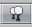

Trees
Unity's Terrain Engine has special support for Trees. You can put thousands of trees onto a Terrain, and render them in-game with a practical frame rate. This works by rendering trees near the camera in full 3D, and transitioning far-away trees to 2D billboards. Billboards in the distance will automatically update to orient themselves correctly as they are viewed from different angles. This transition system makes a detailed tree environment very simple for performance. You have complete control over tweaking the parameters of the mesh-to-billboard transition so you can get the best performance you need.
You can easily paint lots of trees for beautiful environments like this
Adding Trees
Select the Place Trees button  in the Inspector.
Before you can place trees on your terrain, you have to add them to the library of available trees. To do this, click the . You'll see the Add Tree dialog appear.
The Add Tree dialog
Select the tree from your Project View and drag it to the Tree variable. You can also edit the Bend Factor if you want to add an additional bit of animated "bending in the wind" effect to the trees. When you're ready, click . The tree will now appear selected in the Inspector.

The newly added tree appears selected in the Inspector
You can add as many trees as you like. Each one will be selectable in the Inspector for you to place on your Terrain.
The currently selected tree will always be highlighted in orange
Painting Trees
While still using the Place Trees tool, click anywhere on the Terrain to place your trees. To erase trees, hold the button and click on the Terrain.
Painting trees is as easy as using a paintbrush tool
There are a number of options at your disposal when placing trees.
| Brush Size | Radius in meters of the tree placing brush. |
| Tree Spacing | Percentage of tree width between trees. |
| Color Variation | Allowed amount of color difference between each tree. |
| Tree Height | Height adjustment of each tree compared to the asset. |
| Height Variation | Allowed amount of difference in height between each tree. |
| Tree Width | Width adjustment of each tree compared to the asset. |
| Width Variation | Allowed amount of difference in width between each tree. |
Tree Painting Tips
Different Brush sizes cover different area sizes
Adjust Tree Spacing to change the density of the trees you're painting
Editing Trees
To change any import parameters for an added tree, select the detail and choose . Or double-click the tree you want to edit. You will then see the Edit Tree dialog, and you can change any of the settings.
Mass Placement
If you don't want to paint your trees and you just want a whole forest created, you can use . Here, you will see the Mass Place Trees dialog. You can set the number of trees you want placed, and they'll be instantly positioned. All the trees added to your Terrain will be used in this mass placement.
10,000 Trees placed at once
Refreshing Source Assets
If you make any updates to your tree asset source file, it must be manually re-imported into the Terrain. To do this, use . This is done after you've changed your source asset and saved it, and will refresh the trees in your Terrain immediately.
Creating Trees
Every tree should consist of a single mesh with two Materials. One for the trunk and one for the leaves. For performance reasons, triangle count should be kept below 2000 for an average tree. The fewer triangles the better. The pivot point of the tree mesh must be exactly at the root of the tree, that is at the point where the tree should meet the surface it is placed on. This makes it the easiest to import into Unity and other modelling applications.
Trees must use the Nature/Soft Occlusion Leaves and Nature/Soft Occlusion Bark shader. In order to use those shaders you also have to place the tree in a special folder that contains the name "Ambient-Occlusion". When you place a model in that folder and reimport it, Unity will calculate soft ambient occlusion specialized for trees. The "Nature/Soft Occlusion" shaders need this information. If you don't follow the naming conventions the tree will look weird with completely black parts.
Unity also ships with several high quality trees in the "Terrain Demo.unitypackage". You can use those trees readily in your game. Even if you don't want to use the builtin trees, we strongly recommend that you take a look at those trees as an example on how to model trees.
Using Low Poly Trees
One branch with leaves is done with only six triangles and shows quite a bit of curvature. You can add more triangles for even more curvature. But the main point is: When making trees, work with triangles not with quads. If you use quads you basically need twice as many triangles to get the same curvature on branches.
The tree itself wastes a lot of fillrate by having large polygons but almost everything is invisible due to the alpha. This should be avoided for performance reasons and of course because the goal is to make dense trees. This is one of the things that makes Oblivion's trees look great. They are so dense you cant even see through the leaves.